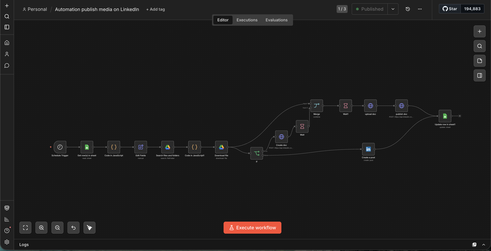

Multi-Platform Content Publishing
A publishing engine that turns a content calendar into live posts across Instagram and LinkedIn — images, videos, carousels, and documents — with temporary hosting and automatic cleanup.

01Overview
A calendar-driven engine that reads a content sheet, pulls the asset from Drive, hosts it temporarily on Supabase for a public URL, publishes to Instagram (Graph API) or LinkedIn (REST) in the right format, updates the sheet, and deletes the temp file — leaving zero mess.
02Business problem
Publishing across Instagram and LinkedIn was manual and slow, and each content type (image, video, carousel, document) needs a different API sequence. The team needed calendar-driven publishing that just worked and left no orphaned files.
03Architecture
04Workflow
05Screenshots

06AI components
- None — this is pure orchestration and media-lifecycle engineering; the value is reliability, not generation.
07Integrations
- Instagram Graph API (POST /media, POST /media_publish).
- LinkedIn REST API (documents initializeUpload + posts, OAuth2 w_member_social).
- Google Sheets (calendar/status).
- Google Drive (assets).
- Supabase Storage (temporary public hosting).
08Technical challenges
- Media-not-ready handling (wait + status check + retry before publishing).
- Format branching for image / video / carousel / document, each with its own API sequence.
- Guaranteeing zero orphaned files by deleting temp assets only after a successful publish.
- LinkedIn OAuth2 scopes and document upload initialization.
09Reliability engineering
- Deployment: self-hosted n8n, schedule every 15 min / hourly.
- Monitoring: Status = Published + timestamp written to the sheet.
- Error handling: upload failure stops + logs + preserves assets; publish failure never deletes assets or marks published; retry on media-not-ready.
- Validation: post-type routing ensures the correct API sequence per format.
- Scalability: per-row calendar processing with zero storage accumulation.
10Business impact
11Lessons learned
Publishing is the easy part — the real work is the media lifecycle: temporary hosting, guaranteed cleanup, and retry-on-not-ready so a slow API never leaves a broken post or a storage leak.
12Future improvements
- Add TikTok/YouTube Shorts targets.
- A preview-approval step before publish.
- Analytics write-back per post.